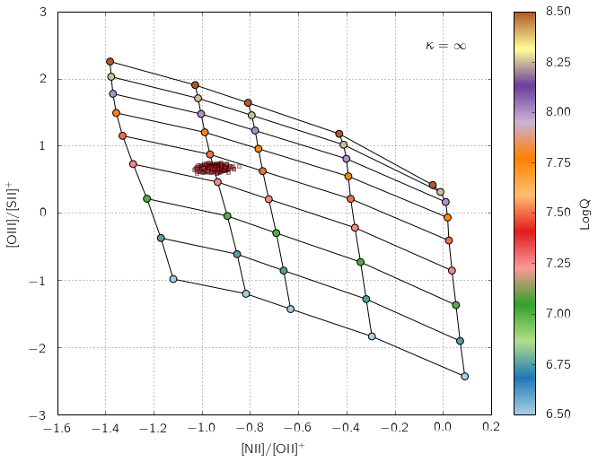
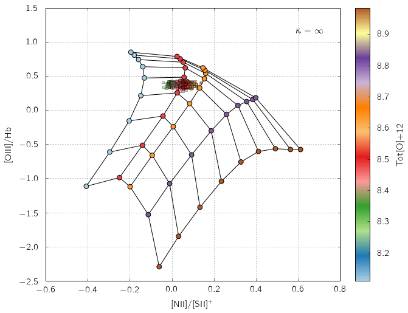
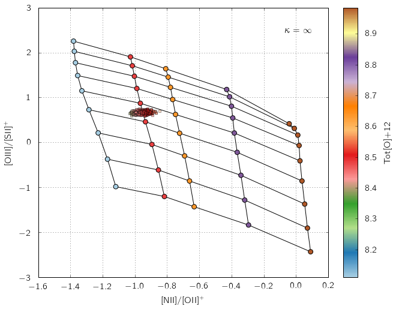
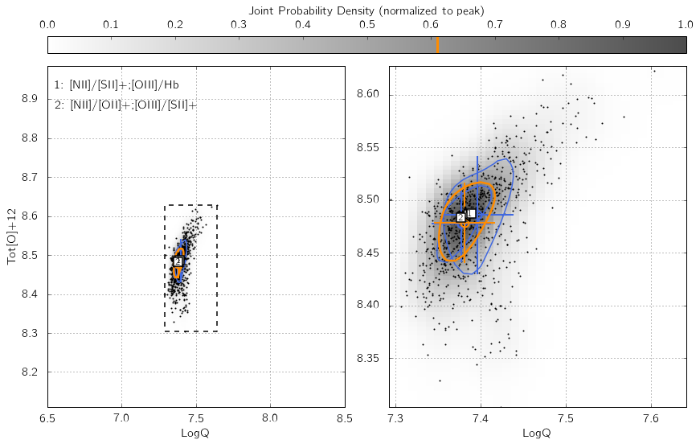
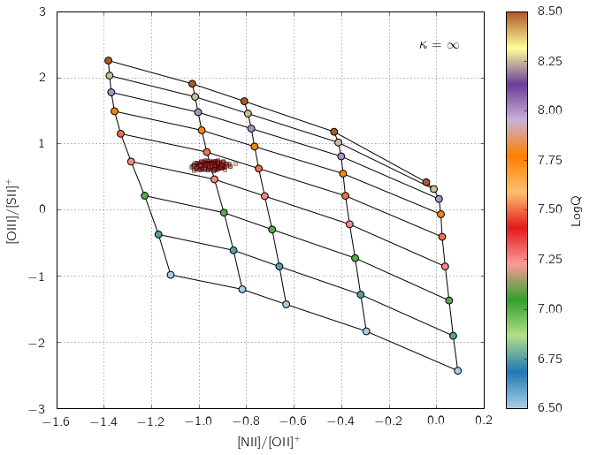
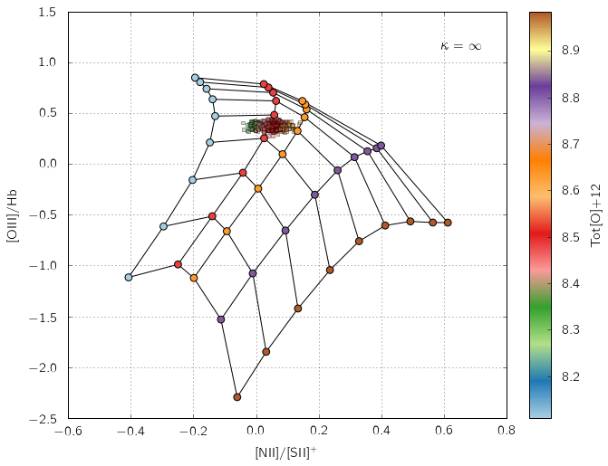
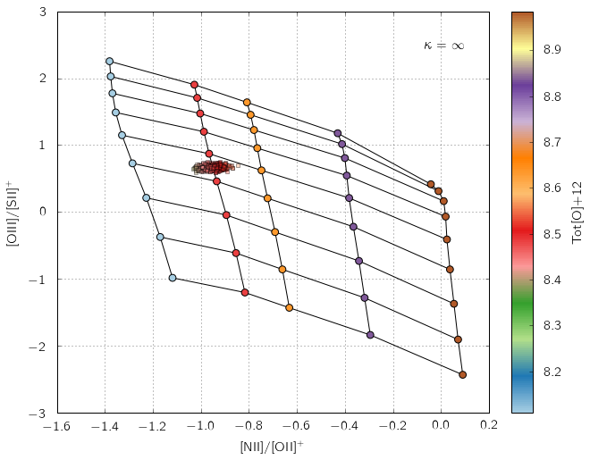
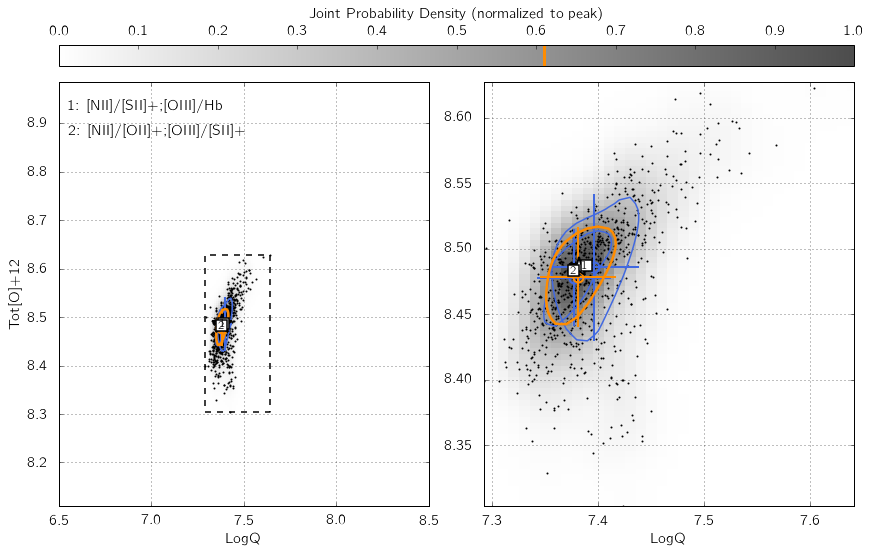

Running pyqz I¶
This page is also available as an IPython notebook
(pyqz_demo_basic.ipynb) included with the code and located in
pyqz/examples/.
A) Installing and importing pyqz¶
Installing pyqz is easy. Download it from Github, unpack it anywhere you like, and make sure that this location is in your Python path. You should then be able to import the package and check its version from within any Python shell:
%matplotlib inline
import pyqz
import numpy as np
From v0.8.0 onwards, the plotting functions have been separated in a distinct module, which must be import separately, if you wish to exploit them.
import pyqz_plots
B) Accessing MAPPINGS line ratio diagnostic grids¶
pyqz gives you easy access to the latest MAPPINGS strong nebular line
ratio diagnostic diagrams (and associated info on the MAPPINGS version
used to generate the grid, etc...). This can for example be useful to
create your own line ratio diagnostic plots. You can access the nodes of
any line ratio diagram using pyqz.get_grid():
a_grid = pyqz.get_grid('[NII]/[SII]+;[OIII]/[SII]+', sampling=1)
The main parameters of the MAPPINGS simulations can be specified via the following keywords:
Pklet’s you define the pressure of the simulated HII regions,structallows you to choose between plane-parallel ('pp') and spherical ('sph') HII regions, andkappalets you define the value of \(\kappa\) (from the so-called \(\kappa\)-distribution).
All these values must match an existing set of MAPPINGS simulations
inside the pyqz/reference_data/ folder, or pyqz will issue an error.
In other words, pyqz will not be running new MAPPINGS simulations for
you.
So, if one wanted to access the MAPPINGS simulations for plane-parallel
HII regions, with Maxwell-Boltzmann electron density distribution,
Pk = 5.0 (these are the default parameters), one should type:
a_grid = pyqz.get_grid('[NII]/[SII]+;[OIII]/[SII]+', struct = 'pp', Pk = 5, kappa = 'inf')
If you want to check how a given line ratio diagnostic diagram looks
(and e.g. check whether the MAPPINGS grid is flat, or wrapped) for line
ratios of your choice, you can use pyqz_plots.plot_grid():
pyqz_plots.plot_grid('[NII]/[OII]+;[OIII]/[OII]+', struct = 'pp', Pk = 5, kappa = 'inf')
You can check which version of MAPPINGS was used to generate the grids currently inside pyqz as follows:
fn = pyqz.pyqz_tools.get_MVphotogrid_fn(Pk = 5.0, calibs = 'GCZO', kappa = np.inf, struct = 'pp', sampling = 1)
info = pyqz.pyqz_tools.get_MVphotogrid_metadata(fn)
print 'MAPPINGS id: %s' % info['MV_id']
print 'Model created: %s' % info['date']
print 'Model parameters: %s' % info['params'].split(': ')[1]
MAPPINGS id: MAPPINGS V HII Region Grid: QZ pp_GCZO_Pk50_kinf
Model created: Thu Dec 10 14:16:36 CLST 2015
Model parameters: pp,two,LPk=5.0,dep=Depln_Fe_1.50.txt,kap=inf,GCZFea05t2,SF=cont,a05,isp,#11,P6,Mv5.0.16,Svm802,FE15
An important feature of pyqz is the auto-detection of wraps in the
diagnostic grids, marked with red segments in the diagram, and returned
as an array by the function pyqz.check_grid().
The default MAPPINGS grids shipped with pyqz are coarse. For various reasons better explained elsewhere (see the MAPPINGS documentation), only a few abundance values have matching stellar tracks AND stellar atmospheres. Hence, only a few abundance points can be simulated in a consistent fashion.
Rather than 1) interpolating between stellar tracks and stellar
atmospheres in the abundance space and 2) running extra MAPPINGS models
(which would use inconsistent & interpolated input), pyqz can directly
resample each diagnostic grid (using the function
pyqz_tools.refine_MVphotogrid(), see the docs for more info). The
resampling is performed in the {LogQ and Tot[O+12] vs line
ratio} space for all line ratios returned by MAPPINGS using Akima
splines. Resampled grids can be accessed via the sampling keyword.
Diagnostic grids resampled 2x2 times are shipped in the default pyqz
package and are directly accessible, e.g.:
pyqz_plots.plot_grid('[NII]/[OII]+;[OIII]/[OII]+', struct = 'pp', Pk = 5, kappa = 'inf', sampling=2)
In the default pyqz diagrams, the original MAPPINGS nodes are circled with a black outline, while the reconstructed nodes are not. For grids more densely resampled, see the “Advanced use 2” below.
C) Deriving LogQ and Tot[O+12] for a given set of line ratios¶
At the core of pyqz lies pyqz.interp_qz(), which is the basic
routine used to interpolate a given line ratio diagnostic grid. The
function is being fed by line ratios stored inside numpy arrays, and
will only return a value for line ratios landing on valid and un-wrapped
regions of the grid:
niioii = np.array([-0.65])
oiiisii = np.array([-0.1])
z = pyqz.interp_qz('Tot[O]+12',[niioii, oiiisii],'[NII]/[OII]+;[OIII]/[SII]+',
sampling=1,struct='pp')
print 'Tot[O]+12 = %.2f' % z
# The result can be visualized using pyqz_plots.plot_grid()
pyqz_plots.plot_grid('[NII]/[OII]+;[OIII]/[SII]+',sampling = 1, struct='pp', data = [niioii,oiiisii], interp_data=z)
Tot[O]+12 = 8.67
Of course, one usually wants to compute both LogQ and
Tot[O+12]or gas[O+12] for a large set of strong emission line
fluxes, combining the estimates from different line ratio diagnostics
diagrams. This is exactly what the function pyqz.get_global_qz()
allows you to do.
The function is being fed the individual line fluxes and associated errors in the form of numpy arrays and lists. ID tags for each dataset can also be given to the function (these are then used if/when saving the different diagrams to files).
pyqz.get_global_qz(np.array([[ 1.00e+00, 5.00e-02, 2.38e+00, 1.19e-01, 5.07e+00, 2.53e-01,
5.67e-01, 2.84e-02, 5.11e-01, 2.55e-02, 2.88e+00, 1.44e-01]]),
['Hb','stdHb','[OIII]','std[OIII]','[OII]+','std[OII]+',
'[NII]','std[NII]','[SII]+','std[SII]+','Ha','stdHa'],
['[NII]/[SII]+;[OIII]/Hb','[NII]/[OII]+;[OIII]/[SII]+'],
ids = ['NGC_1234'],
KDE_method = 'multiv',
KDE_qz_sampling = 201j,
struct = 'pp',
sampling = 1,
verbose = True)
--> Received 1 spectrum ...
--> Dealing with them one at a time ... be patient now !
(no status update until I am done ...)
All done in 0:00:00.570925
[array([[ 7.38831887e+00, 8.48760006e+00, 7.37681443e+00,
8.48372388e+00, 7.38256665e+00, 5.75221877e-03,
8.48566197e+00, 1.93808636e-03, 7.40187112e+00,
5.25153395e-02, 8.48403665e+00, 5.81923212e-02,
7.38004469e+00, 2.91962544e-02, 8.48364792e+00,
2.74853806e-02, 7.38278851e+00, 3.35428824e-02,
8.48207392e+00, 3.32925610e-02, 0.00000000e+00,
0.00000000e+00]]),
['[NII]/[SII]+;[OIII]/Hb|LogQ',
'[NII]/[SII]+;[OIII]/Hb|Tot[O]+12',
'[NII]/[OII]+;[OIII]/[SII]+|LogQ',
'[NII]/[OII]+;[OIII]/[SII]+|Tot[O]+12',
'<LogQ>',
'std(LogQ)',
'<Tot[O]+12>',
'std(Tot[O]+12)',
'[NII]/[SII]+;[OIII]/Hb|LogQ{KDE}',
'err([NII]/[SII]+;[OIII]/Hb|LogQ{KDE})',
'[NII]/[SII]+;[OIII]/Hb|Tot[O]+12{KDE}',
'err([NII]/[SII]+;[OIII]/Hb|Tot[O]+12{KDE})',
'[NII]/[OII]+;[OIII]/[SII]+|LogQ{KDE}',
'err([NII]/[OII]+;[OIII]/[SII]+|LogQ{KDE})',
'[NII]/[OII]+;[OIII]/[SII]+|Tot[O]+12{KDE}',
'err([NII]/[OII]+;[OIII]/[SII]+|Tot[O]+12{KDE})',
'<LogQ{KDE}>',
'err(LogQ{KDE})',
'<Tot[O]+12{KDE}>',
'err(Tot[O]+12{KDE})',
'flag',
'rs_offgrid']]
By default, all line fluxes errors are assumed to be gaussian, where the
input std value is the 1 standard deviation. Alternatively, line
fluxes can be tagged as upper-limits by setting their errors to -1.
The outcome of get_global_qz() can be visualized using
pyqz_plots.plot_global_qz(), but only if KDE_pickle_loc is set
in the first one. This keyword defines the location in which to save a
pickle file that contains all the relevant pieces of information
associated with a given function call, i.e.: the single and global KDE,
the srs random realizations of the line fluxes, etc ...
out = pyqz.get_global_qz(np.array([[ 1.00e+00, 5.00e-02, 2.38e+00, 1.19e-01, 5.07e+00, 2.53e-01,
5.67e-01, 2.84e-02, 5.11e-01, 2.55e-02, 2.88e+00, 1.44e-01]]),
['Hb','stdHb','[OIII]','std[OIII]','[OII]+','std[OII]+',
'[NII]','std[NII]','[SII]+','std[SII]+','Ha','stdHa'],
['[NII]/[SII]+;[OIII]/Hb','[NII]/[OII]+;[OIII]/[SII]+'],
ids = ['NGC_1234'],
KDE_method = 'multiv',
KDE_qz_sampling = 201j,
KDE_pickle_loc = './example_plots/',
struct = 'pp',
sampling = 1,
verbose = True)
import glob
fn = glob.glob('./example_plots/*NGC_1234*.pkl')
# pyqz_plots.get_global_qz() takes the pickle filename as argument.
pyqz_plots.plot_global_qz(fn[0], show_plots=True, save_loc = './example_plots', do_all_diags=True)
--> Received 1 spectrum ...
--> Dealing with them one at a time ... be patient now !
(no status update until I am done ...)
All done in 0:00:00.639897
 







Users less keen on using Python extensively can alternatively feed their
data to pyqz via an appropriately structured .csv file and receive
another .csv file in return (as well as a numpy array):
pyqz.get_global_qz_ff('./example_input.csv',
['[NII]/[SII]+;[OIII]/Hb','[NII]/[OII]+;[OIII]/[SII]+'],
struct='pp',
KDE_method='multiv',
KDE_qz_sampling = 201j,
sampling=1)
--> Received 1 spectrum ...
--> Dealing with them one at a time ... be patient now !
(no status update until I am done ...)
All done in 0:00:00.521950
(array([[ 7.38831887e+00, 8.48760006e+00, 7.37681443e+00,
8.48372388e+00, 7.38256665e+00, 5.75221877e-03,
8.48566197e+00, 1.93808636e-03, 7.40830999e+00,
5.96592780e-02, 8.49102382e+00, 5.97711699e-02,
7.38561173e+00, 2.66149396e-02, 8.48676873e+00,
2.35291434e-02, 7.38608041e+00, 3.38911741e-02,
8.48524692e+00, 3.24784930e-02, 0.00000000e+00,
0.00000000e+00]]),
['[NII]/[SII]+;[OIII]/Hb|LogQ',
'[NII]/[SII]+;[OIII]/Hb|Tot[O]+12',
'[NII]/[OII]+;[OIII]/[SII]+|LogQ',
'[NII]/[OII]+;[OIII]/[SII]+|Tot[O]+12',
'<LogQ>',
'std(LogQ)',
'<Tot[O]+12>',
'std(Tot[O]+12)',
'[NII]/[SII]+;[OIII]/Hb|LogQ{KDE}',
'err([NII]/[SII]+;[OIII]/Hb|LogQ{KDE})',
'[NII]/[SII]+;[OIII]/Hb|Tot[O]+12{KDE}',
'err([NII]/[SII]+;[OIII]/Hb|Tot[O]+12{KDE})',
'[NII]/[OII]+;[OIII]/[SII]+|LogQ{KDE}',
'err([NII]/[OII]+;[OIII]/[SII]+|LogQ{KDE})',
'[NII]/[OII]+;[OIII]/[SII]+|Tot[O]+12{KDE}',
'err([NII]/[OII]+;[OIII]/[SII]+|Tot[O]+12{KDE})',
'<LogQ{KDE}>',
'err(LogQ{KDE})',
'<Tot[O]+12{KDE}>',
'err(Tot[O]+12{KDE})',
'flag',
'rs_offgrid'])
The first line of the input file must contain the name of each column, following the pyqz convention. The order itself does not matter, e.g.:
Id,[OII]+,std[OII]+,Hb,stdHb,[OIII],std[OIII],[OI],std[OI],Ha,stdHa,[NII],std[NII],[SII]+,std[SII]+
The Id (optional) can be used to add a tag (i.e. a string) to each
set of line fluxes. This tag will be used in the filenames of the
diagrams (if some are saved) and in the output .csv file as well.
Commented line begin with #, missing values are marked with $$$
(set with the missing_values keyword), and the decimal precision in
the output file is set with decimals (default=5).
At this point, it must be stressed that ``pyqz.get_global_qz()`` can only exploit a finite set of diagnostic grids, namely:
pyqz.diagnostics.keys()
['[NII]/[OII]+;[OIII]/[SII]+',
'[NII]/[OII]+;[OIII]/[OII]+',
'[NII]/[SII]+;[NII]/Ha;[OIII]/Hb',
'[NII]/[SII]+;[OIII]/Hb',
'[OIII]4363/[OIII];[OIII]/[SII]+',
'[NII]/[SII]+;[OIII]/[OII]+',
'[NII]/[OII]+;[SII]+/Ha',
'[OIII]4363/[OIII];[SII]+/Ha',
'[OIII]4363/[OIII];[OIII]/[OII]+',
'[NII]/[SII]+;[OIII]/[SII]+']
These specific diagnostic diagrams are chosen to be largely flat, i.e.
they are able to cleanly disentangle the influence of LogQ and
Tot[O]+12. One does not need to use all the grids together. For
example, if one knows that an [OII] line flux measurement is corrupted,
one ought to simply use the diagnostic grids that do not rely on this
line to derive the estimates of LogQ and Tot[O]+12.
Users can easily add new diagnostics to this list (defined inside
pyqz_metadata.py), but will do so at their own risk.